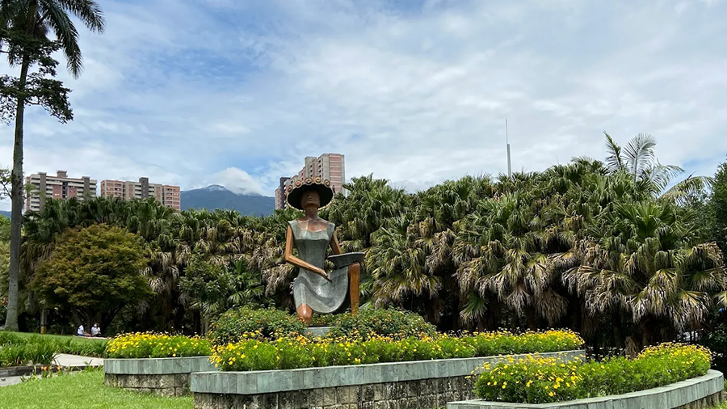
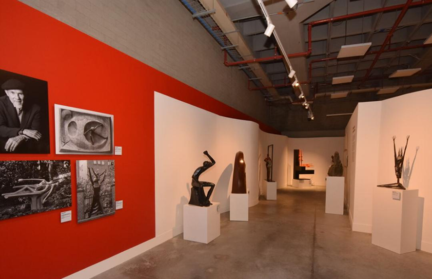
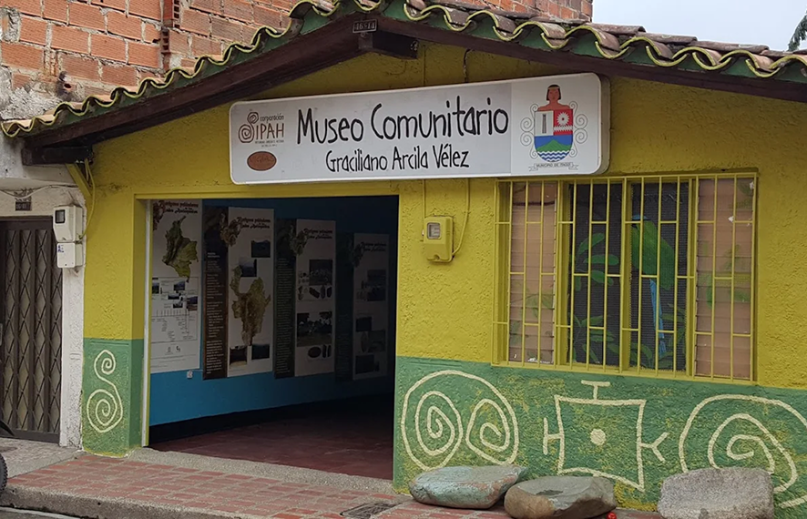

Museos
Casa Museo Ditaires
La Casa Museo Ditaires o Casa Museo Diego Echavarría Misas es un recinto ubicado en el barrio Ditaires en la ciudad de Itagüí (Colombia). El museo se creó ya que en esta casa vivió el filántropo colombiano Diego Echavarría Misas. Desde el año 1965 la casa se ha restaurado por el Gobierno de Itagüí y se ha mantenido intacta, con todo su entorno y posesiones de este importante personaje de la historia Colombiana.
Cl. 36 #56-67, Pilsen, Itagüí, Antioquia
Lunes a Sabado, 9 a.m a 4 p.m
Ver comentarios Juan Pérez
Juan Pérez
Es un lugar muy amplio adecuado por si necesitas hacer una sesión de fotos ya sea de 15's o de boda, tiene mucha naturaleza. Tambien encuentras diferentes clases desde baile hasta taekwondo por si quieres inscribir a tu hijo/a.
 María Gómez
María Gómez
Un espacio agradable,amplio,se puede disfrutar en familia,practicar tu deporte favorito,realizan clases de aeróbicosy rumba de forma gratuita . excelente acceso,muy limpio y toda su silleteria en buen estado.
 Carlos Ríos
Carlos Ríos
Excelente lugar para el deporte socializar con la gente alrededor hay otra cancha y es un buen ambiente de habitat
Cra. 50 #52-77, Villa Paula, Itagüi
Lunes a Sabado, de 8 a.m a 5 p.m
43737676
Ver comentarios
Juan Pérez
Es un lugar muy amplio adecuado por si necesitas hacer una sesión de fotos ya sea de 15's o de boda, tiene mucha naturaleza. Tambien encuentras diferentes clases desde baile hasta taekwondo por si quieres inscribir a tu hijo/a.
María Gómez
Un espacio agradable,amplio,se puede disfrutar en familia,practicar tu deporte favorito,realizan clases de aeróbicosy rumba de forma gratuita . excelente acceso,muy limpio y toda su silleteria en buen estado.
Carlos Ríos
Excelente lugar para el deporte socializar con la gente alrededor hay otra cancha y es un buen ambiente de habitat
Centro cultural Caribe
El Museo Centro Cultural Caribe en Itagüí, Colombia, fue fundado para revitalizar el antiguo Teatro Caribe y promover la cultura y el arte local, así como ofrecer espacios para la educación ambiental y el disfrute de la comunidad. La iniciativa surgió como parte de un proyecto más amplio para transformar la zona central de Itagüí, recuperando espacios emblemáticos y generando nuevas oportunidades.
Museo Graciliano Arcila
El Museo Comunitario Graciliano Arcila Vélez es una experiencia de carácter sociocultural que hace parte de las estrategias diseñadas por la Corporación SIPAH con el apoyo de la comunidad local, para alcanzar la apropiación social del patrimonio cultural y natural. Se dio apertura al primer Museo Comunitario del Valle de Aburrá bajo el nombre de Graciliano Arcila Vélez, en homenaje a este personaje que en vida realizó importantes aportes al patrimonio del municipio y a la Antropologíaq a nivel departamental y nacional.
Cra. 57 #46c35, El Rosario, Itagüi
Lunes a Sábado de 2p.m a 5p.m
300 6345648
Ver comentarios
Juan Pérez
Es un lugar muy amplio adecuado por si necesitas hacer una sesión de fotos ya sea de 15's o de boda, tiene mucha naturaleza. Tambien encuentras diferentes clases desde baile hasta taekwondo por si quieres inscribir a tu hijo/a.
María Gómez
Un espacio agradable,amplio,se puede disfrutar en familia,practicar tu deporte favorito,realizan clases de aeróbicosy rumba de forma gratuita . excelente acceso,muy limpio y toda su silleteria en buen estado.
Carlos Ríos
Excelente lugar para el deporte socializar con la gente alrededor hay otra cancha y es un buen ambiente de habitat